织梦师把想象，写成画面。
给你的 AI 助手一套视觉创作方法。
从一句想法，到完整提示词，再到看图修改。
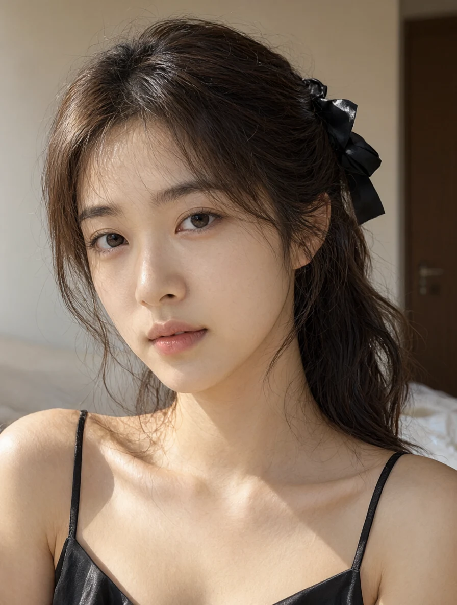
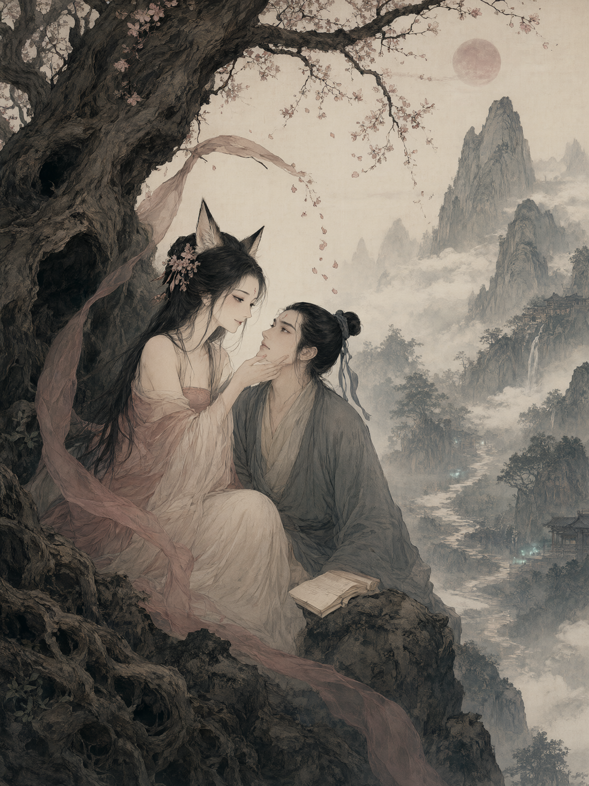
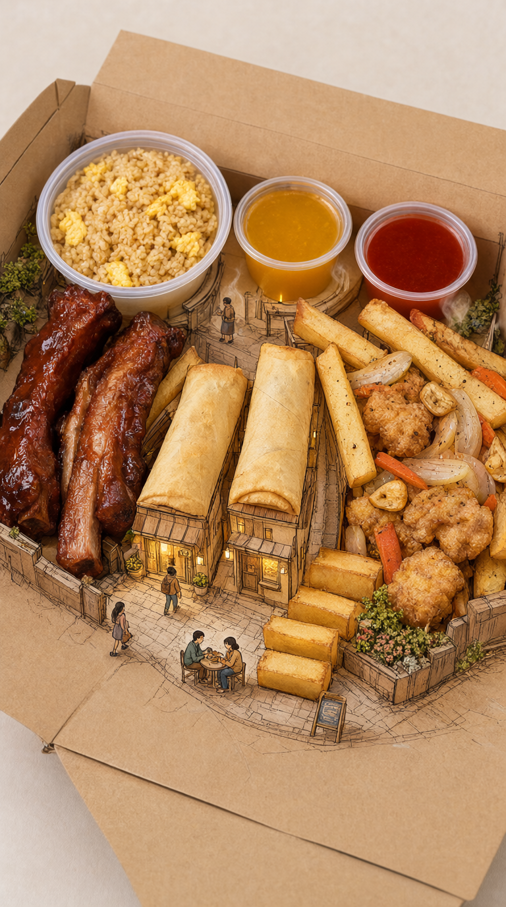
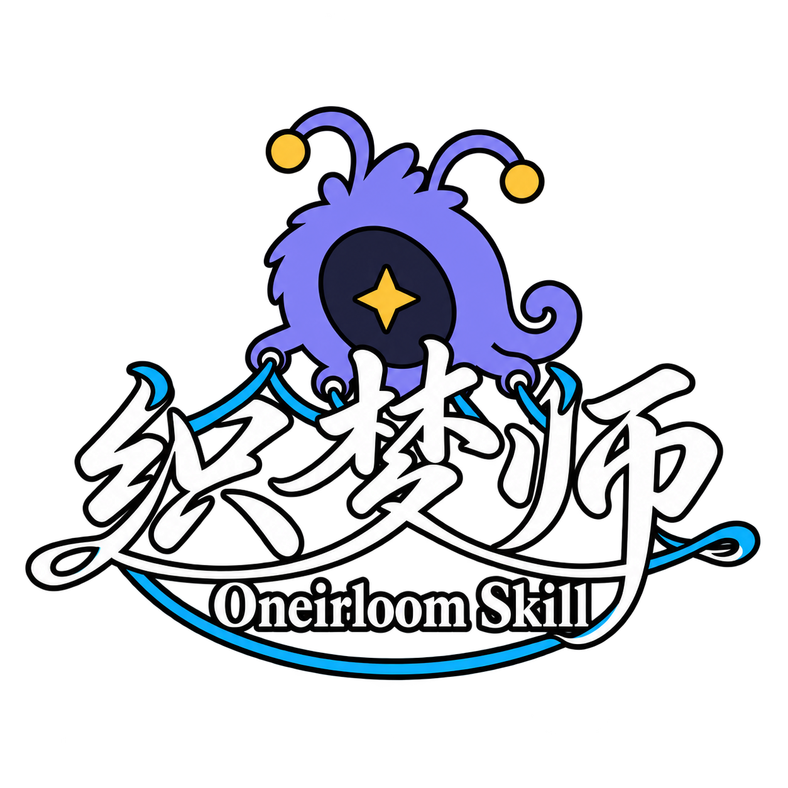
它帮你组织画面
一句日常表达，
展开成一张画面。
“我想要一张
安静的卧室全身照。”
织梦师帮你把想法说清楚：
拍到哪里、身体怎么放、
衣料什么质感、光从哪里来。
把“感觉”拆成可写的细节
你想怎么拍，
就把它说具体。
已有生成结果Qwen-Image-2.1
靠近一点，换个坐姿，或者让光从背后照进来。
把取景、身体和光线写成明确的关系。
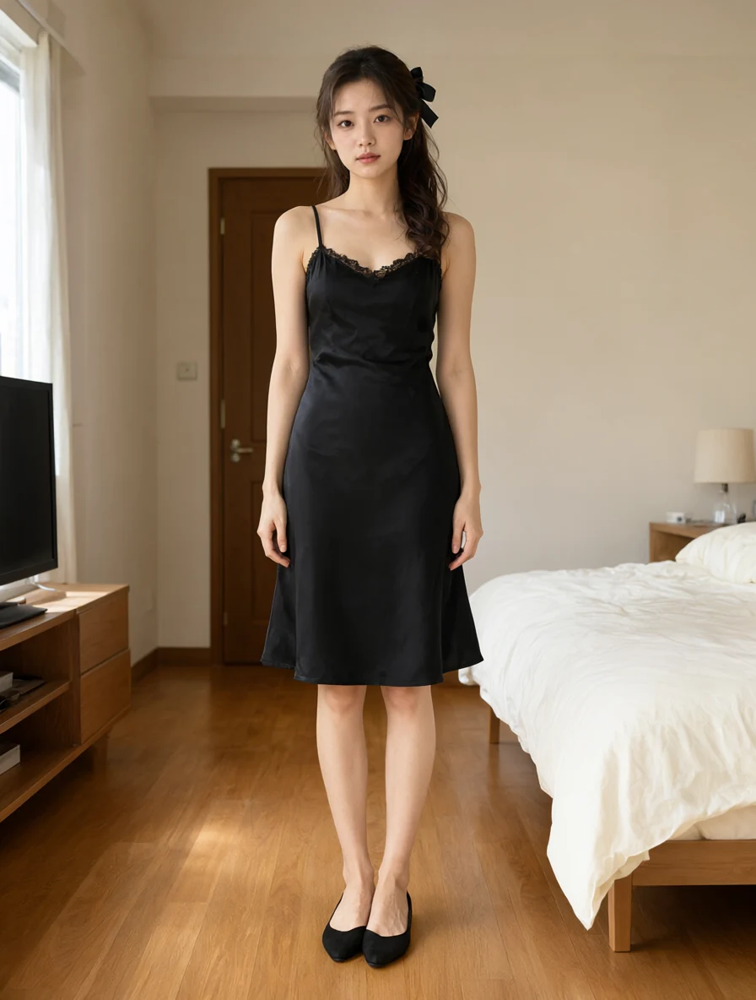
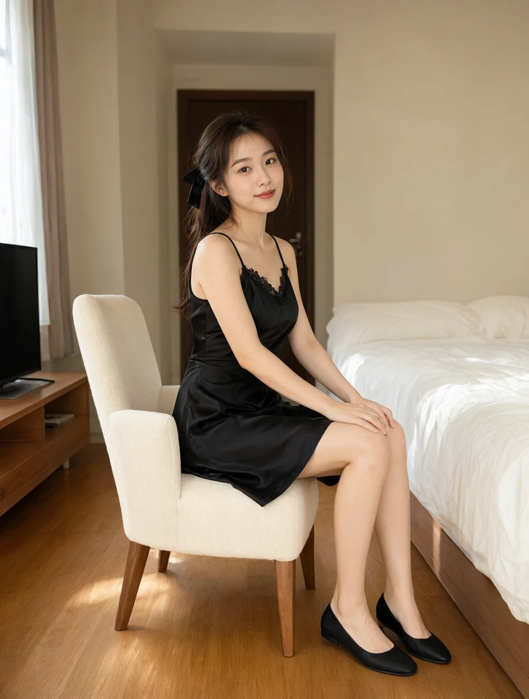
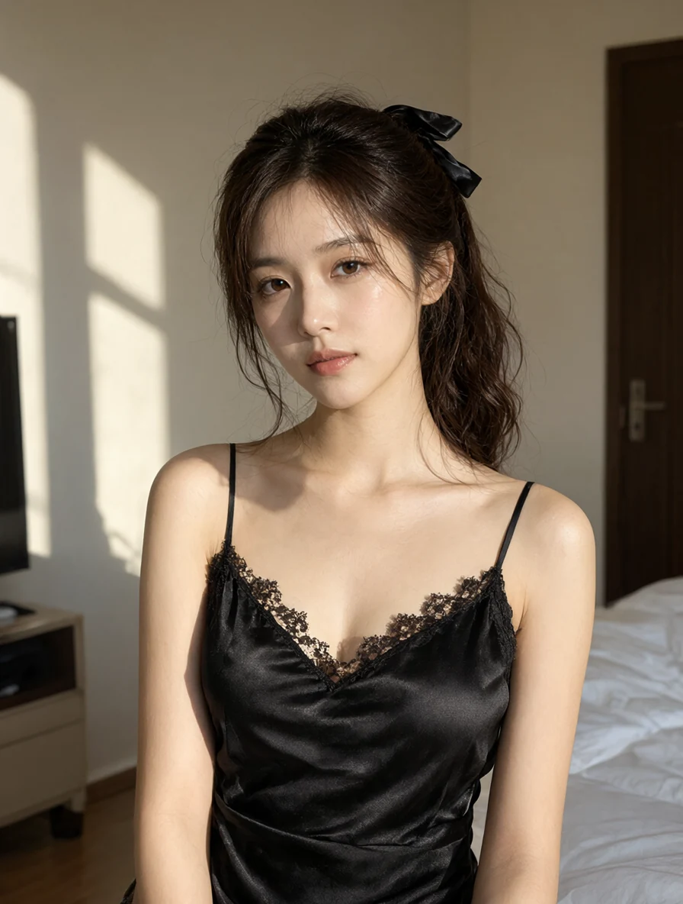
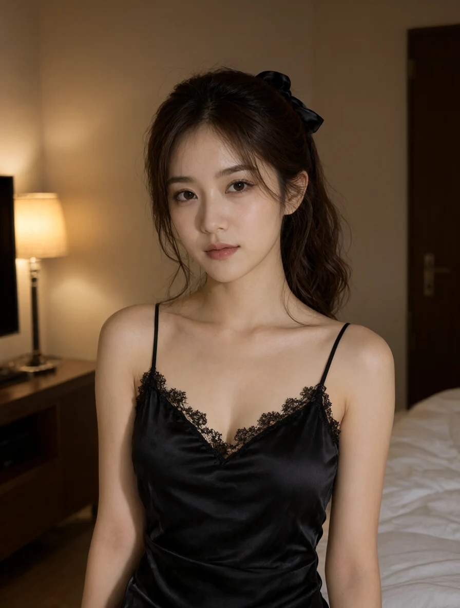
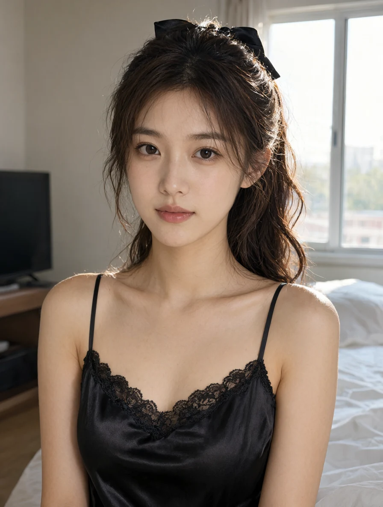
选自已有的人像教程结果，完整教程收录 62 张生成图。各图可能同时改变脸部、姿态与环境，不能据此判断身份锁定或单项调整的效果。
一份外卖，
一座微缩小镇。
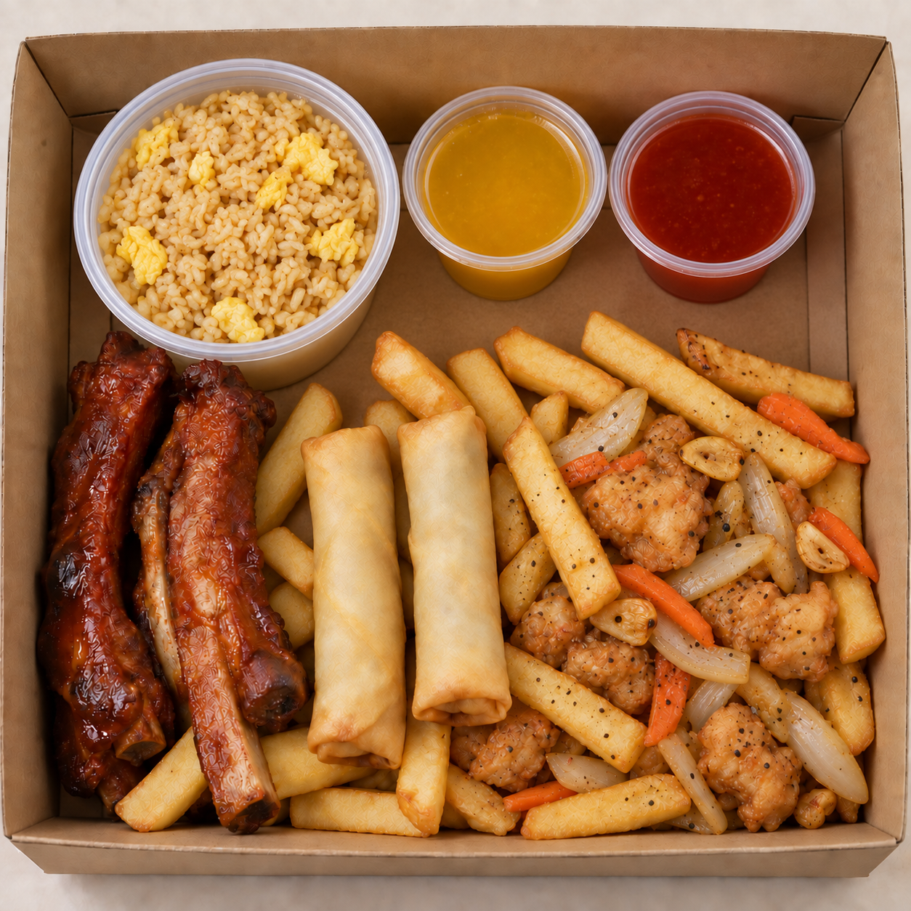
先看产品，再构思故事。
春卷成为屋顶，薯条成为台阶。
餐盒里长出街巷与微缩人物，
食物仍保留摄影质感。
这个案例保留原始产品照片与用户认可的结果；实际提交提示词、模型和生成参数未记录。
一个产品，一段故事。
一种氛围，一个世界。
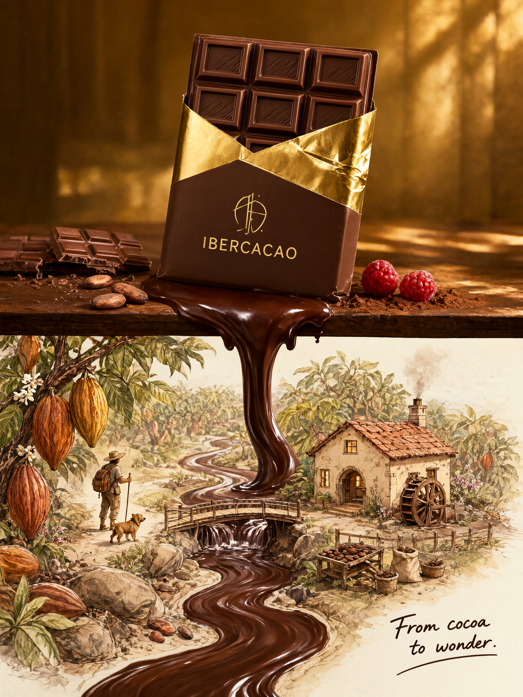
让巧克力流入可可庄园
产品的形状与材质，连起摄影和手绘。
让山雾与月色服务于叙事
从人物关系出发，组织环境与氛围。
两张均为已有案例。巧克力保留原始提示词，志怪插画的氛围得到用户认可；模型和生成参数未知。
从一个形象，
到一套角色资产。
织梦兽也是这样诞生的。
先找到记得住的轮廓，再延展动作与设定。
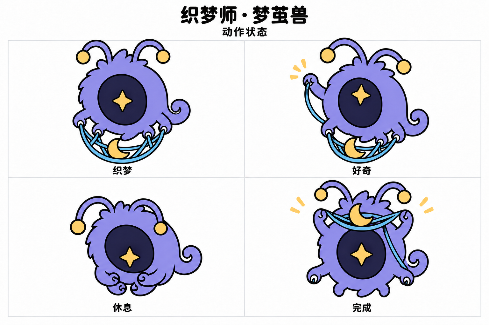
角色设定 · 三视图 · 动作状态
表情卡 · 服装与材质设定
把已经确认的识别特征
写进后续创作要求。
织梦兽正面形象已获认可。这里展示的是四种动作的资产设计稿，新增动作与三视图仍待单独验收。
说出想法。看见结果。
继续把画面改对。
给目标与材料
一句需求、参考图，
或已有提示词与结果。
明确画面关系
主体、位置、姿态，
构图、光色与风格。
交付完整版本
默认中英双语，
按目标模型适配。
对照结果继续改
找到主要偏差，
给出完整修订稿。
把作品与完整提示词
排成一张 3:4 分享卡片。
把织梦师，交给你的 AI。
将技能集合放进助手的技能搜索目录，
在新对话中调用 $oneirloom。
Skill 提供创作方法与提示词。图片生成通过你使用的助手工具或生图入口完成。
Krea 2 与 Qwen-Image-2.1 有专门适配，其他模型先使用通用自然语言描述。